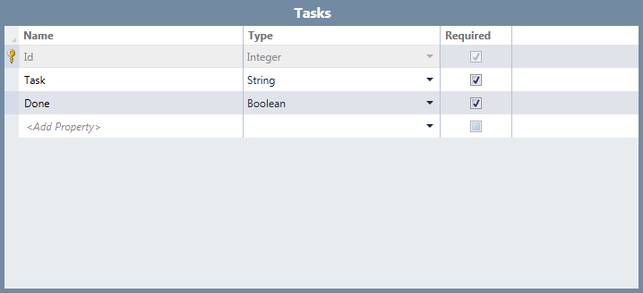
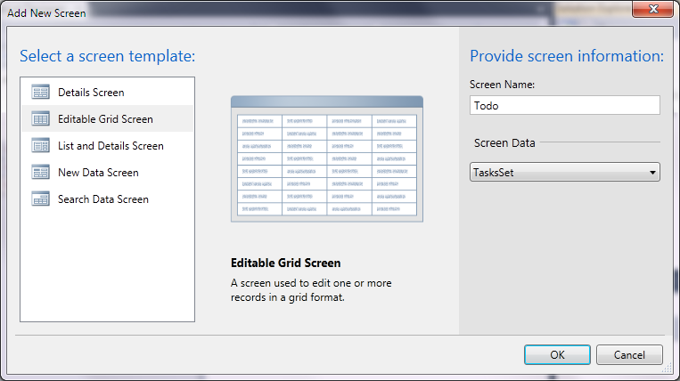
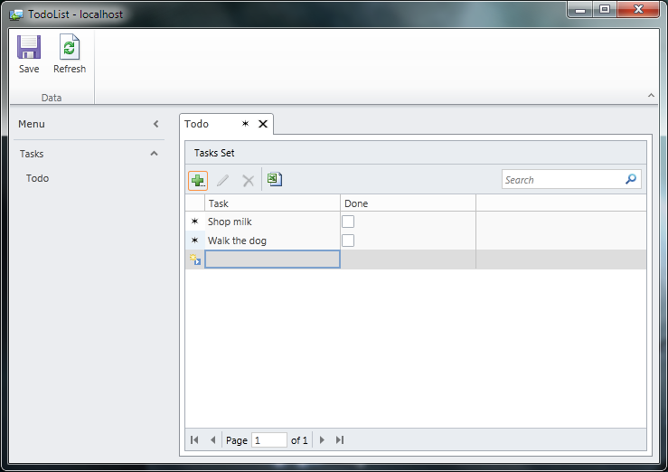
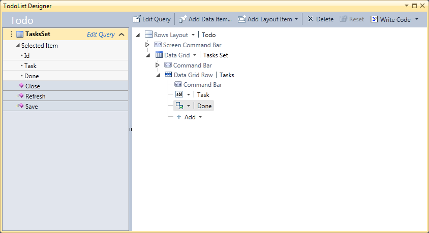
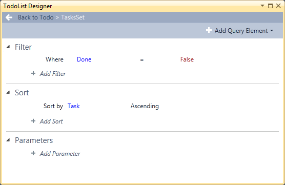

Visual Studio LightSwitch
LightSwitch is a new development tool from Microsoft which lets you create data-centric applications by writing little or no code. It is built on .NET, Silverlight and SQL Server. The result can be deployed both to the web and as a desktop application.
For an example we are going to create a very simple to do list. First download and install LightSwitch, start it and create a new project. Then we are asked if we want to create a new table or use an existing data source. We want to do the former.
In our application a task has a description and a Boolean flag that tells whether the task has been done. To be able to view and edit our tasks we need to add a screen to our application.
Right click Screens in the solution explorer to add a new screen. We want to use an editable grid screen. We must also select which data it should use and give it a name.
That is actually all that is needed. If we run the application now we get a list where we can create new tasks, mark them as done and save them for later.
Let us make it a bit more interesting by only showing tasks that hasn’t been done yet. We do this by clicking Edit Query.
While we’re at it we can also tell it to sort the tasks. Now the application will only show uncompleted tasks. But we have to manually refresh after we save for it to update properly. We can fix that. Right click on Save on the right and select Edit Saved Code.
namespace LightSwitchApplication
{
public partial class Todo
{
partial void Todo_Saved()
{
Refresh();
}
}
}This code refreshes the screen after the data has been saved. Now the application works like we would expect.
The application can now be published. If you publish it as a desktop application you also need to install an SQL server and create the tables on the target machine. In a practical situation you would probably want to connect to a common database.
Visual Studio 2015 was the last version to include support for LightSwitch.